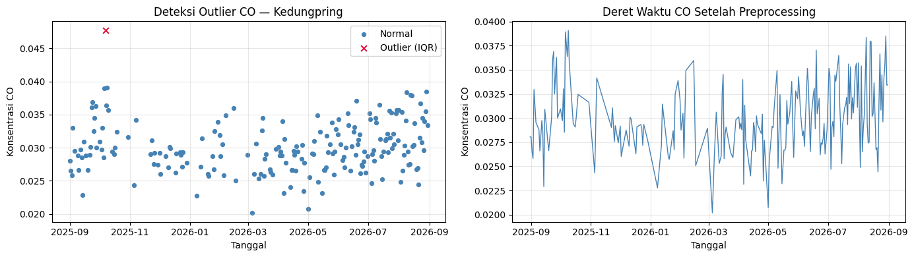
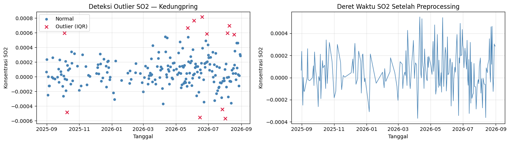

Preprocessing & Ekstraksi Fitur CO dan SO₂ — Kecamatan Kedungpring#
Import Pustaka#
import os
import inspect
import pandas as pd
import numpy as np
import matplotlib.pyplot as plt
import tsfel.feature_extraction.features as tsfel_features
CSV_DIR = "../data/csv/"
FEATURE_DIR = "../data/features/"
os.makedirs(FEATURE_DIR, exist_ok=True)
TEMPORAL_EXTENT = ["2025-08-31", "2026-08-31"] # sama seperti tahap ekstraksi
POLLUTANTS_TO_PROCESS = ["CO", "SO2"]
raw_csv_paths = {
band: os.path.join(CSV_DIR, f"{band}-Kedungpring.csv")
for band in POLLUTANTS_TO_PROCESS
}
for band, path in raw_csv_paths.items():
exists = os.path.exists(path)
print(f"[{band}] {path} {'ditemukan' if exists else 'TIDAK DITEMUKAN'}")
[CO] ../data/csv/CO-Kedungpring.csv ditemukan
[SO2] ../data/csv/SO2-Kedungpring.csv ditemukan
Preprocessing#
Preprocessing dilakukan untuk memastikan data siap digunakan dalam proses ekstraksi fitur.
1. Reindex ke Deret Harian Penuh#
Data mentah hanya berisi baris untuk hari-hari dengan observasi satelit valid. Setiap
polutan di-reindex ke deret tanggal harian penuh (31 Agustus 2025 – 31 Agustus
2026, 366 hari) — hari yang sebelumnya “tidak ada barisnya” menjadi eksplisit NaN,
siap ditangani pada tahap imputasi.
2. Deteksi Outlier — Metode IQR#
Titik data \(x_i\) dikategorikan outlier apabila \(x_i < \text{Batas Bawah}\) atau \(x_i > \text{Batas Atas}\). Outlier ditandai sebagai NaN (bukan dihapus barisnya), agar struktur deret waktu harian tetap utuh.
3. Imputasi hingga 0 NaN#
Missing value (dari reindex) dan outlier (dari IQR) diisi bersamaan menggunakan
interpolasi linear berbasis waktu, dilanjutkan forward/backward fill. Sebuah assert
memastikan hasil akhir benar-benar 0 NaN sebelum lanjut ke ekstraksi fitur.
def preprocess_pollutant(csv_path, band, temporal_extent, csv_dir):
"""Reindex -> deteksi outlier (IQR) -> imputasi hingga 0 NaN. Mengembalikan df bersih."""
df_raw = pd.read_csv(csv_path)
df_raw["date"] = pd.to_datetime(df_raw["date"])
df_raw[band] = pd.to_numeric(df_raw[band], errors="coerce")
print(f"[{band}] Jumlah baris SEBELUM reindex: {len(df_raw)}")
full_date_range = pd.date_range(start=temporal_extent[0], end=temporal_extent[1], freq="D")
df = (
df_raw.set_index("date")
.reindex(full_date_range)
.rename_axis("date")
.reset_index()
)
print(f"[{band}] Jumlah baris SETELAH reindex: {len(df)}")
print(f"[{band}] Missing value setelah reindex: {df[band].isna().sum()}")
valid_values = df[band].dropna()
Q1 = valid_values.quantile(0.25)
Q3 = valid_values.quantile(0.75)
IQR = Q3 - Q1
lower_bound = Q1 - 1.5 * IQR
upper_bound = Q3 + 1.5 * IQR
is_outlier = (df[band] < lower_bound) | (df[band] > upper_bound)
print(f"[{band}] Outlier terdeteksi: {is_outlier.sum()} dari {valid_values.shape[0]} data valid")
df_before_impute = df.copy()
df_before_impute["is_outlier"] = is_outlier
df.loc[is_outlier, band] = np.nan
df_clean = df.set_index("date").interpolate(method="time").ffill().bfill()
n_missing_after = df_clean[band].isna().sum()
assert n_missing_after == 0, f"[{band}] Masih ada NaN tersisa setelah imputasi!"
print(f"[{band}] ✅ Bersih — 0 NaN, 0 outlier tersisa.")
df_clean = df_clean.reset_index()
clean_csv_path = os.path.join(csv_dir, f"{band}-Kedungpring-clean.csv")
df_clean.to_csv(clean_csv_path, index=False)
print(f"[{band}] Data bersih disimpan: {clean_csv_path}\n")
return df_before_impute, df_clean
clean_data = {}
before_impute_data = {}
for band in POLLUTANTS_TO_PROCESS:
if not os.path.exists(raw_csv_paths[band]):
print(f"[{band}] Dilewati — file mentah tidak ditemukan: {raw_csv_paths[band]}")
continue
df_before, df_clean = preprocess_pollutant(
raw_csv_paths[band], band, TEMPORAL_EXTENT, CSV_DIR
)
before_impute_data[band] = df_before
clean_data[band] = df_clean
[CO] Jumlah baris SEBELUM reindex: 205
[CO] Jumlah baris SETELAH reindex: 366
[CO] Missing value setelah reindex: 161
[CO] Outlier terdeteksi: 1 dari 205 data valid
[CO] ✅ Bersih — 0 NaN, 0 outlier tersisa.
[CO] Data bersih disimpan: ../data/csv/CO-Kedungpring-clean.csv
[SO2] Jumlah baris SEBELUM reindex: 221
[SO2] Jumlah baris SETELAH reindex: 366
[SO2] Missing value setelah reindex: 145
[SO2] Outlier terdeteksi: 12 dari 221 data valid
[SO2] ✅ Bersih — 0 NaN, 0 outlier tersisa.
[SO2] Data bersih disimpan: ../data/csv/SO2-Kedungpring-clean.csv
Visualisasi: Outlier & Deret Waktu Bersih (CO dan SO₂)#
Grafik pertama
Menampilkan:
data normal
data yang terdeteksi sebagai outlier
Grafik kedua
Menampilkan:
deret waktu setelah preprocessing
for band in POLLUTANTS_TO_PROCESS:
if band not in clean_data:
continue
df_before = before_impute_data[band]
df_clean = clean_data[band]
normal = df_before[~df_before["is_outlier"]]
outliers = df_before[df_before["is_outlier"]]
fig, axes = plt.subplots(1, 2, figsize=(14, 4))
axes[0].scatter(normal["date"], normal[band], color="steelblue", s=18, label="Normal")
axes[0].scatter(outliers["date"], outliers[band], color="crimson", s=40, marker="x", label="Outlier (IQR)")
axes[0].set_title(f"Deteksi Outlier {band} — Kedungpring")
axes[0].set_xlabel("Tanggal")
axes[0].set_ylabel(f"Konsentrasi {band}")
axes[0].legend()
axes[0].grid(True, alpha=0.3)
axes[1].plot(df_clean["date"], df_clean[band], color="steelblue", linewidth=1)
axes[1].set_title(f"Deret Waktu {band} Setelah Preprocessing")
axes[1].set_xlabel("Tanggal")
axes[1].set_ylabel(f"Konsentrasi {band}")
axes[1].grid(True, alpha=0.3)
plt.tight_layout()
plt.show()


Ekstraksi 68 Fitur dengan TSFEL (Loop CO & SO₂)#
Fitur diekstrak dari 68 fungsi di tsfel.feature_extraction.features, mencakup
domain statistical, temporal, dan spectral. Penjelasan lengkap tiap fitur
(rumus, contoh perhitungan) sudah dibahas rinci pada notebook preprocessing NO₂
sebelumnya — di sini kode ekstraksinya dijalankan sebagai fungsi yang sama, di-loop
untuk CO dan SO₂.
FEATURE_LIST = """abs_energy auc autocorr average_power calc_centroid calc_max calc_mean
calc_median calc_min calc_std calc_var dfa distance ecdf ecdf_percentile ecdf_percentile_count
ecdf_slope entropy fundamental_frequency higuchi_fractal_dimension hist_mode human_range_energy
hurst_exponent interq_range kurtosis lempel_ziv lpcc max_frequency max_power_spectrum
maximum_fractal_length mean_abs_deviation mean_abs_diff mean_diff median_abs_deviation
median_abs_diff median_diff median_frequency mfcc mse negative_turning neighbourhood_peaks
petrosian_fractal_dimension pk_pk_distance positive_turning power_bandwidth rms skewness slope
spectral_centroid spectral_decrease spectral_distance spectral_entropy spectral_kurtosis
spectral_positive_turning spectral_roll_off spectral_roll_on spectral_skewness spectral_slope
spectral_spread spectral_variation spectrogram_mean_coeff sum_abs_diff wavelet_abs_mean
wavelet_energy wavelet_entropy wavelet_std wavelet_var zero_cross""".split()
print("Jumlah fitur yang akan diekstrak per polutan:", len(FEATURE_LIST))
def to_scalar(result):
if isinstance(result, dict) and "values" in result:
result = result["values"]
if isinstance(result, (list, tuple, np.ndarray)):
arr = np.asarray(result, dtype=float)
return float(np.nanmean(arr))
return float(result)
def extract_one(fn_name, signal, fs):
fn = getattr(tsfel_features, fn_name)
params = inspect.signature(fn).parameters
if "fs" in params:
result = fn(signal, fs)
else:
result = fn(signal)
return to_scalar(result)
def extract_tsfel_features(signal_1d, band, feature_dir):
fs = 1
row = {}
for fn_name in FEATURE_LIST:
try:
row[fn_name] = extract_one(fn_name, signal_1d, fs)
except Exception as e:
print(f"[{band}] [PERINGATAN] Gagal mengekstrak fitur '{fn_name}': {e}")
row[fn_name] = np.nan
features_df = pd.DataFrame([row])
feature_csv_path = os.path.join(feature_dir, f"{band}_Kedungpring_TSFEL.csv")
features_df.to_csv(feature_csv_path, index=False)
print(f"[{band}] Fitur tersimpan: {feature_csv_path} ({features_df.shape[1]} fitur)")
return features_df
Jumlah fitur yang akan diekstrak per polutan: 68
feature_results = {}
for band in POLLUTANTS_TO_PROCESS:
if band not in clean_data:
continue
signal_1d = clean_data[band][band].astype(float).values
feature_results[band] = extract_tsfel_features(signal_1d, band, FEATURE_DIR)
print("\nRingkasan fitur yang berhasil diekstrak:")
for band, feats in feature_results.items():
print(f" - {band}: {feats.shape[1]} fitur -> {FEATURE_DIR}{band}_Kedungpring_TSFEL.csv")
[CO] Fitur tersimpan: ../data/features/CO_Kedungpring_TSFEL.csv (68 fitur)
[SO2] Fitur tersimpan: ../data/features/SO2_Kedungpring_TSFEL.csv (68 fitur)
Ringkasan fitur yang berhasil diekstrak:
- CO: 68 fitur -> ../data/features/CO_Kedungpring_TSFEL.csv
- SO2: 68 fitur -> ../data/features/SO2_Kedungpring_TSFEL.csv
print("\n=== HASIL EKSTRAKSI FITUR ===")
all_features = []
for band, feats in feature_results.items():
temp = feats.copy()
temp.insert(0, "Polutan", band)
all_features.append(temp)
all_features_df = pd.concat(all_features, ignore_index=True)
display(all_features_df)
=== HASIL EKSTRAKSI FITUR ===
| Polutan | abs_energy | auc | autocorr | average_power | calc_centroid | calc_max | calc_mean | calc_median | calc_min | ... | spectral_spread | spectral_variation | spectrogram_mean_coeff | sum_abs_diff | wavelet_abs_mean | wavelet_energy | wavelet_entropy | wavelet_std | wavelet_var | zero_cross | |
|---|---|---|---|---|---|---|---|---|---|---|---|---|---|---|---|---|---|---|---|---|---|
| 0 | CO | 0.326148 | 10.822841 | 3.0 | 8.935557e-04 | 184.681419 | 0.039073 | 0.029655 | 0.029280 | 0.020191 | ... | 0.134737 | 0.573634 | 1.795362e-05 | 0.706885 | 0.001774 | 0.008004 | 2.137570 | 0.007777 | 6.767125e-05 | 0.0 |
| 1 | SO2 | 0.000010 | 0.040629 | 2.0 | 2.725647e-08 | 219.452157 | 0.000548 | 0.000059 | 0.000041 | -0.000369 | ... | 0.146712 | 0.217979 | 4.179144e-08 | 0.039747 | 0.000003 | 0.000212 | 2.175391 | 0.000212 | 4.629732e-08 | 86.0 |
2 rows × 69 columns